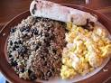
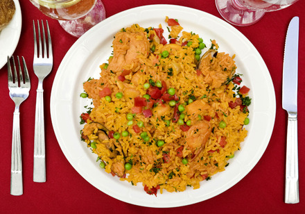
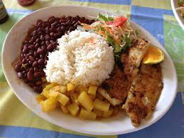
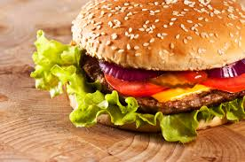
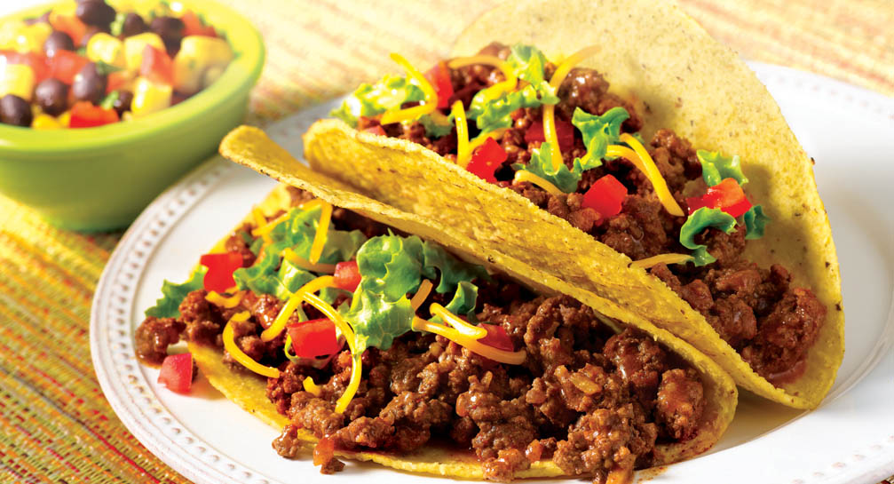
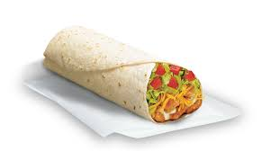

Desayunos
Pinto
Desayuno tradicional costarricense que consiste en una combinación de arroz y frijoles, junto a salsa inglesa, cebolla y pimientos picados. Se sirve acompañado de huevos fritos, natilla y tortillas o plátano maduro.
Platos fuertes
Arroz con pollo
Platillo tradicional. Se sirve acompañado de ensalada.
Casado
Almuerzo tradicional de la cocina de Costa Rica. Consta de arroz, frijoles, ensalada y un plátano dulce frito, acompañado de carne de res, de cerdo o pollo.
Comidas rápidas
Hamburguesa
Deliciosa hamburguesa especial con 2 tortas de carne, queso americano, lechuga, tomate, tocineta y salsas al gusto
Tacos
Deliciosa tortilla de maíz,rellena de carne sazonada, lechuga y queso cheddar
Burrito
Deliciosa tortilla de trigo con pollo o carne, natilla, guacamole, lechuga, queso mixto y tomate